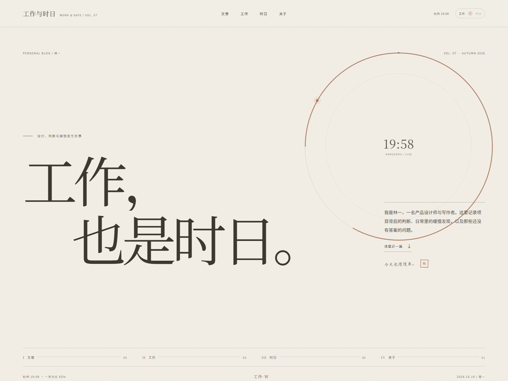
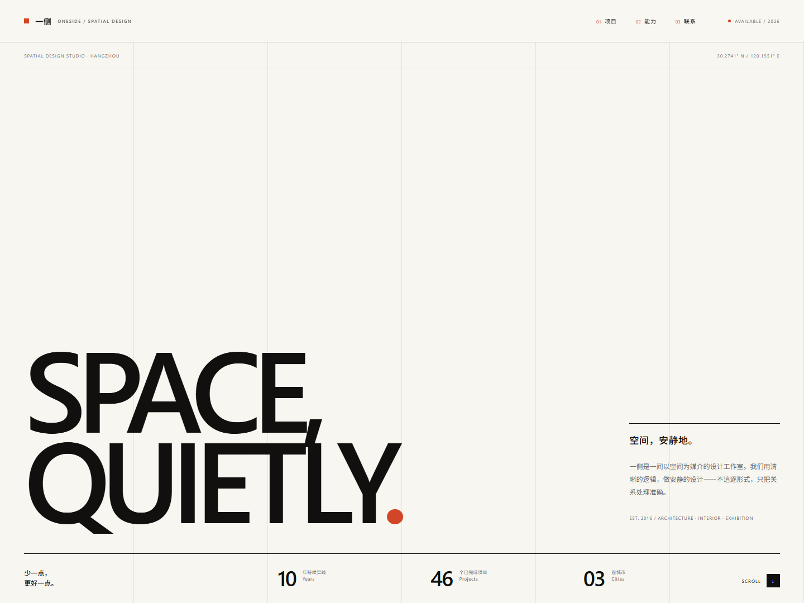
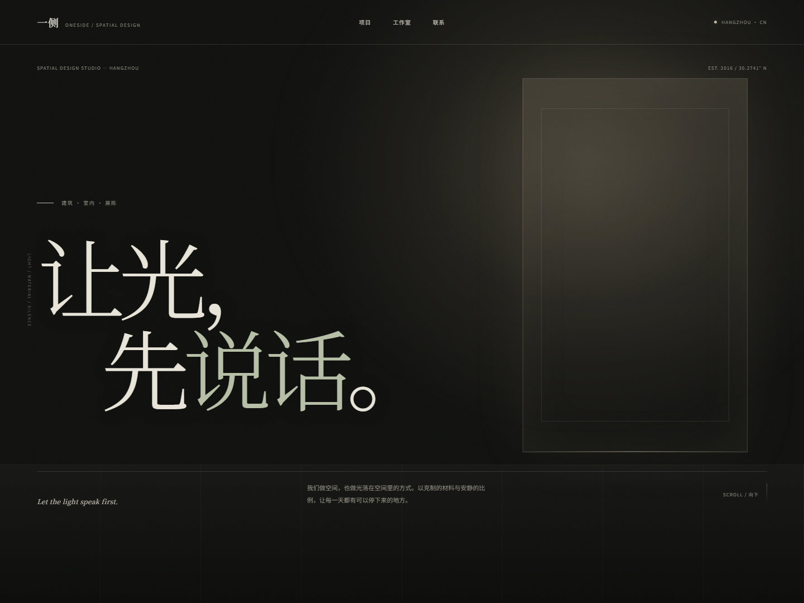

打开博客 ↗
01 · SELECTED
PERSONAL BLOG / PAPER
工作与时日 Work & Days
已深化的个人博客。以工作和时日为主题，用「工作 / 时日」开关切换昼夜：实时日晷、点线目录、手写便签、低对比亮灯阅读与日月扫过转场。
方向 A 已选定 · 2026
浏览三个方向 ↓方向 A 已按你的选择深化为个人博客「工作与时日」，以工作和时日为主题，加入阅读层、悬停预览与滚动动效。B、C 作为空间设计工作室的备选方向保留在下方。
静态 HTML / CSS / JS · 无需构建工具
A 已深化 · B / C 备选
Three directions / 三个方向
一种审美，三种落点
打开博客 ↗已深化的个人博客。以工作和时日为主题，用「工作 / 时日」开关切换昼夜：实时日晷、点线目录、手写便签、低对比亮灯阅读与日月扫过转场。

打开备选 ↗瑞士式网格、高对比无衬线、编号系统与单一朱红。理性、清晰，有很强的现代识别度，仍保留为工作室备选。

打开备选 ↗暗色、材质感与舞台式光影。空间退到暗处，文字与一束光成为主角，适合强调氛围的项目，仍保留为工作室备选。
How they differ / 差异对照
| 对照项 | A / 已选定 | B / 备选 | C / 备选 |
|---|---|---|---|
| 第一印象 | 安静、私密，像一本个人册子 | 清晰、利落，有秩序感 | 沉浸、克制，带一点戏剧性 |
| 字体主角 | 宋体、日期编号与细线 | 思源黑体、数字与标签系统 | 宋体大字、大量留黑与光 |
| 色彩 | 纸白 / 墨黑 / 陶土 | 纸白 / 纯黑 / 朱红 | 近黑 / 骨白 / 灰绿 |
| 最适合 | 个人博客、写作、作品记录 需要长期更新的私人站点 |
品牌、科技、办公 强调逻辑与现代性的团队 |
展陈、酒店、高端住宅 强调光线与氛围的项目 |
| 阅读节奏 | 慢，接近纸质阅读 | 快，信息层级明确 | 慢，偏向感受与浏览 |
| 需要注意 | 更新频率决定站点生命力 | 个性需要靠细节支撑 | 对项目图片质量要求更高 |
Next step / 下一步